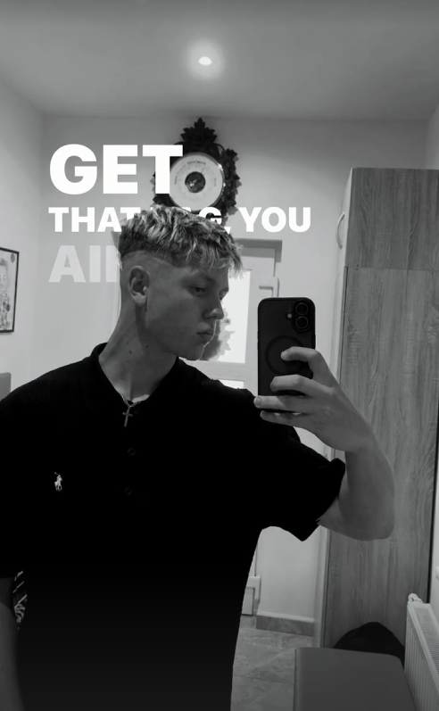

Matěj
Janoška
Fotbalista · Student SPŠ Hradební · Budoucí elektrotechnik
18letý fotbalista z Vlčkovic. Miluju sport, techniku a zábavu.
Směřuji ke studiu elektrotechniky a sním o profesi revizního technika.

O mně
Kombinace sportovní vytrvalosti, technického myšlení a smyslu pro humor.
Sportovec tělem, technik hlavou
Jmenuji se Matěj Janoška, je mi 18 let a žiji v malebných Vlčkovicích. Od malička mě provází sportovní duch, chuť se hýbat a neustále se v něčem posouvat dál.
Studuji na SPŠ, SOŠ a SOU Hradební, kde získávám pevné základy technického vzdělání. Po maturitě plánuji pokračovat studiem elektrotechniky na vysoké škole.
Mým velkým snem a profesním cílem je stát se revizním technikem – pracovat v oboru s vysokou odpovědností, kde záleží na přesnosti a bezpečnosti.
Jsem člověk pro každou legraci, rád trávím čas s přáteli a do všeho jdu s plným nasazením a úsměvem.
Fotbal a pohyb
Na hřišti se učím disciplíně, vytrvalosti i týmové souhře, což přenáším do běžného života.
Studium a technika
SPŠ Hradební a zápal pro elektrotechniku – základ pro budoucí praxi revizního technika.
Člověk pro zábavu
Nekazím žádnou legraci, sázím na přátelskou atmosféru a pozitivní přístup ke každé situaci.
Co dělám a co mě baví
Čtyři oblasti, které formují můj každý den.
Fotbal
Sport, tým, disciplína a pohyb.
Fotbal pro mě není jen koníček, ale životní styl. Tréninky a zápasy mě učí bojovat za tým do poslední minuty a nikdy se nevzdávat při neúspěchu.
Technika & Elektro
Zájem o budoucí studium a revizní praxi.
Zajímá mě, jak věci fungují pod povrchem. Elektrotechnika má obrovskou budoucnost – od bezpečných rozvodů po moderní energetiku a automatizaci.
Škola
Studium na SPŠ, SOŠ a SOU Hradební.
Škola, která mi dává jak teoretické znalosti, tak praktický technický rozhled. Stavím si zde základy pro úspěšné zvládnutí vysokoškolského studia.
Zábava & Přátelé
Otevřený člověk pro každou legraci.
Mám rád společnost fajn lidí, smích, cestování a zážitky, na které se nezapomíná. Rád poznávám nové lidi a nové věci.
Moje cíle
Kroky, kterými přeměňuji své sny v konkrétní realitu.
Úspěšně dokončit střední školu
Završit studium na SPŠ, SOŠ a SOU Hradební maturitní zkouškou a získat potřebné odborné znalosti.
Studium elektrotechniky na VŠ
Prohloubit znalosti silnoproudu, slaboproudu a projektování elektrických zařízení na vysoké škole.
Stát se revizním technikem
Složit zkoušky odborné způsobilosti a stát se autorizovaným revizním technikem elektrických zařízení s vlastní praxí.
Dál se rozvíjet ve fotbale
Udržovat si špičkovou kondici, zlepšovat techniku i taktické myšlení a sbírat se svým týmem vítězství.
Kontakt
Máš dotaz, nápad nebo si chceš jen pokecat? Napiš mi!
Pojďme se spojit
Jsem otevřený novým příležitostem, technickým diskusím i sportovním výzvám. Neváhej mi napsat na e-mail.
Kliknutím se otevře tvoje e-mailová aplikace s adresou příjemce předvyplněnou.